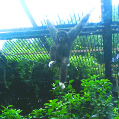
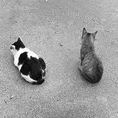
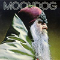
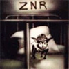

|
 |
#上野動物公園 (10/2) blogとゆーものにも憧れつつ 相変わらずタグ書いてます。 |
| 2004.9 / 2004.11 |

#本気で忙しい・・・全然更新できない。マジ無理。気になるライヴは行ってたりしますけど。（左の@ついてるの参照）| 小野真弓/シーソー 何か最近話題の小野真弓さんなのですが、決してネタで買ってる訳では無くて。たまたまラジオで聴いた1stシングルを気に入ってしまったって訳で。どーもこの人の声が凄い好きみたいで。 えーとこの2ndシングルは尾崎亜美作曲ですけど、そのタイトル曲は何かベタな感じでイマイチ。2曲目の「Happiness」はポップで可愛くて○。3曲目がフォーキーな感じで一番イイかも、でも何故か作曲者のmayuって人が2コーラス目を歌ってます。アイドルポップスでこーゆーのってあまり無いと思うんですけど。 で、明らかに小野真弓の方が下手なんだけど、何だか小野真弓の方がイイ。まぁアイドルポップスってそーゆーモノか。 （以来テレビとかビミョーにチェックしてます、何かその内DVDとか買っちゃいそうな気がする） |
|
 |
MOONDOG/MOONDOG アメリカの盲目のミュージシャン（NYでストリートミュージシャンやってたとか）本名Louis Hardin。1969年のと1971年のアルバムのカップリング。この人も音を説明するの難しいなぁ、この2枚だけでも随分音が違うし。 室内楽みたいなジャズみたいな音ですけれど、全然難解でもアヴァンギャルドでもなくて、とても親しみやすい音楽。Robert WyattとかPascal Comeladeとか好きな人は聴いてみたらイイかも。 |
 |
ZNR/Traite De Mecanique Populaire ZNRですZNR。持ってたんだけどどっか行ったんで買いなおしました。 オトボケ変態室内楽、やっぱしイイ。上のMOONDOGのCDにもどこか通じるような・・・不思議音楽。 |
| STOCK, HAUSEN & WALKMAN/Oh My BAG! コレのジャケットの「自分のバッグでお買い物」ってのを見てたら、こないだmixi経由で大ハマリした環境派天使スギナ☆ミライがフィードバックしてきました。杉並区方面で。 てか内容はコラージュ + ドラムンベース、キッチュで可愛い。（いやスギナ☆ミライじゃなくて） |